Open Value — landing explorations
Visuals: the service and its actors
Eight ways to show who does what, each in a different visual theme. Pictures first, labels only where needed. Use cases and numbers are illustrative.
Hero explorations
Twelve hero directions for the landing page. Copy is shared across boards; entry numbers and hashes are illustrative. Dashed outlines mean proposed or under research.
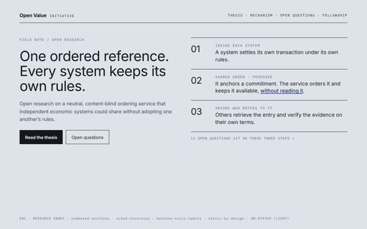
E01 · Research index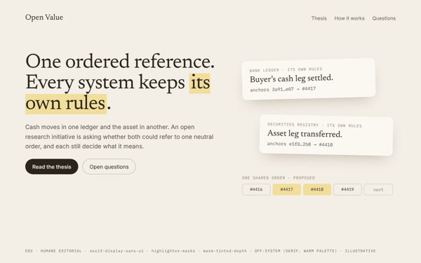
E02 · Humane editorial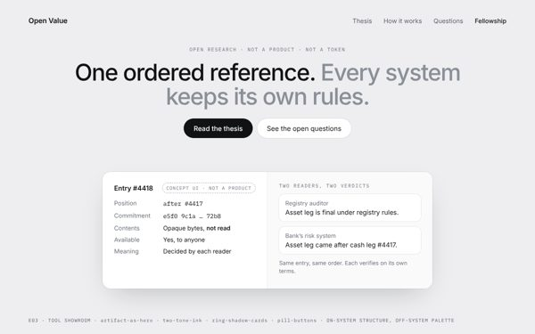
E03 · Tool showroom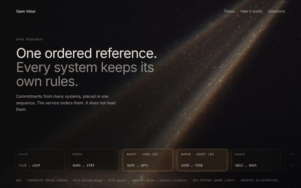
E04 · Cinematic media canvas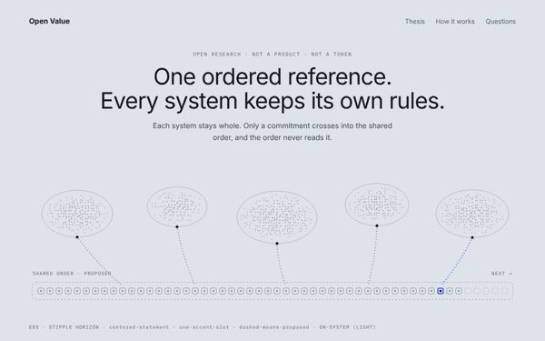
E05 · Stipple horizon (light)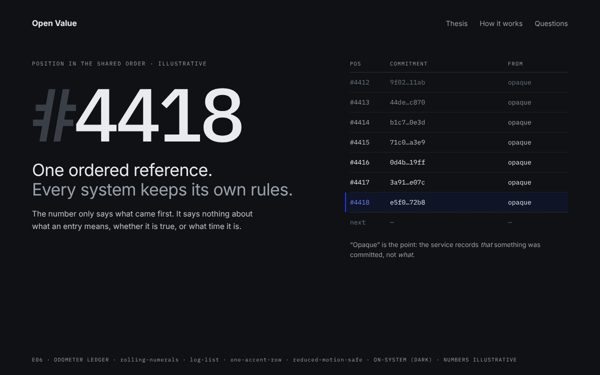
E06 · Odometer ledger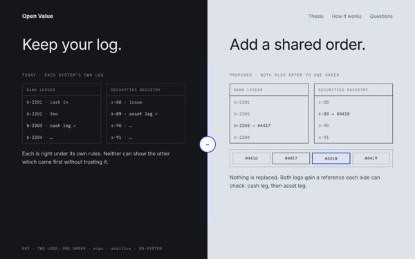
E07 · Two logs, one order (wipe)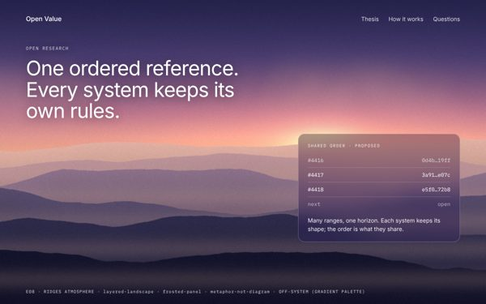
E08 · Ridges atmosphere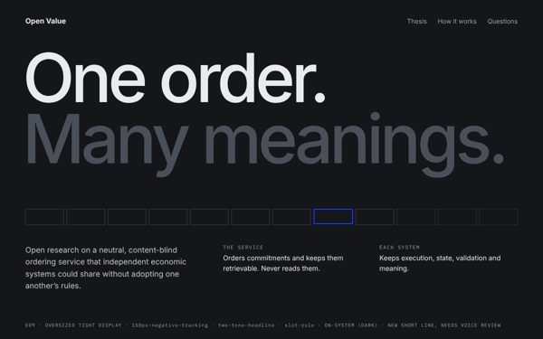
E09 · Oversized tight display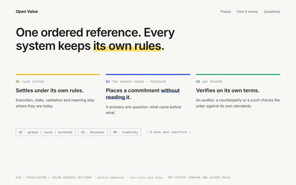
E10 · Highlighter + indexed sections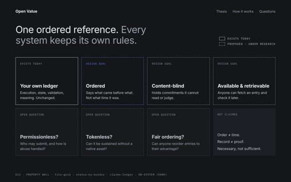
E11 · Property wall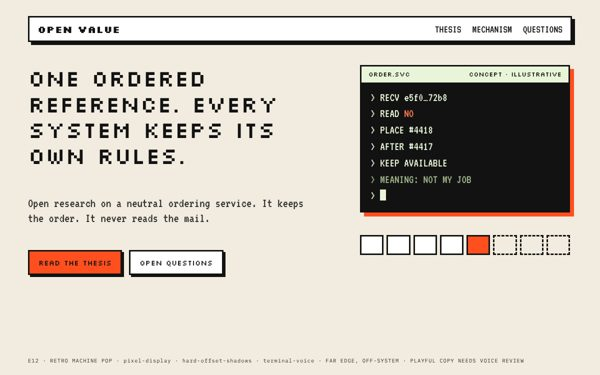
E12 · Retro machine pop (far edge)